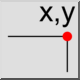
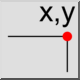
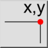
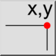

Позиция
Toolbar / Icon:
 

Menu: Инфо > Позиция
Shortcut: I, O
Commands: infopos | io
Это автоматический перевод.
Toolbar / Icon:
 

Menu: Инфо > Позиция
Shortcut: I, O
Commands: infopos | io
Description:
This tool outputs the absolute, Cartesian coordinates of chosen points in the drawing.